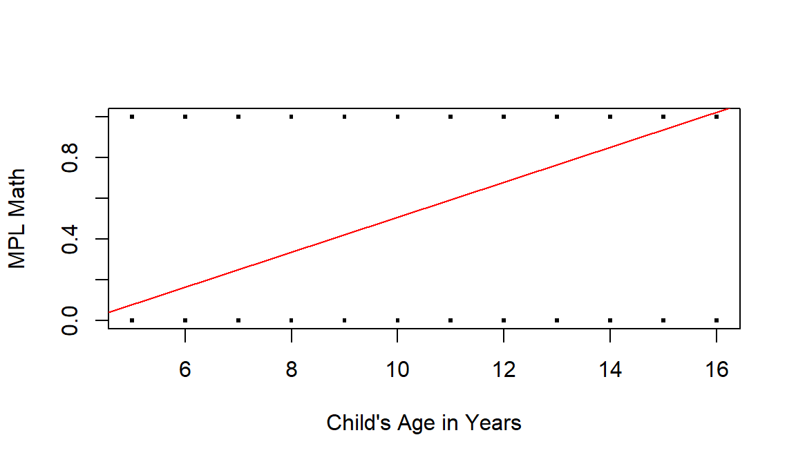
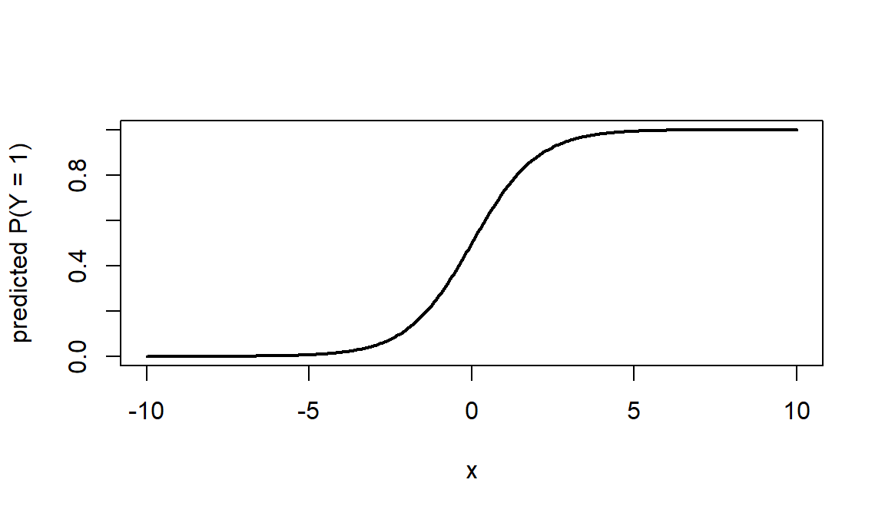
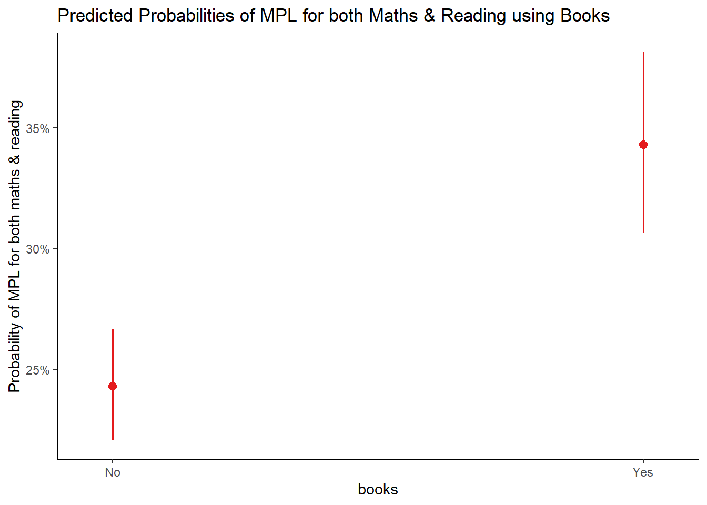
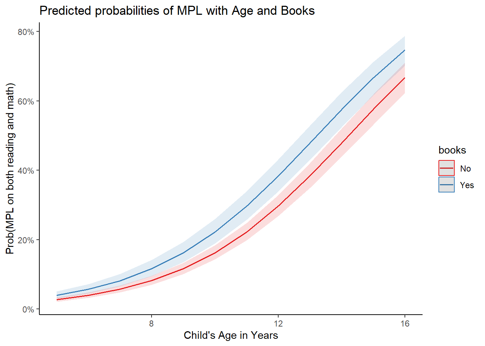
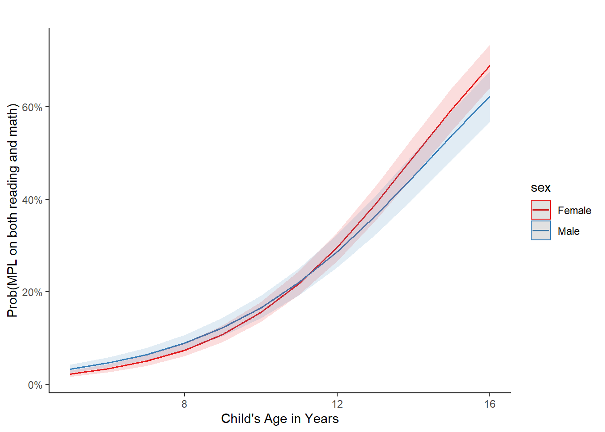

Chapter 12 Logistic Regression
Many questions in early-foundational learning research ask about the likelihood of a binary outcome - something that is either “yes/no” or “0/1”. For instance, how likely is a child to meet the minimum proficiency level in both maths and reading, given the child’s age and whether the language of assessment matches with the child’s home language. In this lesson, we use the ICAN-ICAR 2025 survey data to model binary outcomes using logistic regression.
A simple linear regression can be used as a “linear probability model”, but it often produces predicted values below 0 or above 1 and does not handle the changing variability that comes with binary outcomes. Logistic regression avoids these issues by modeling the log-odds of the outcome, which naturally maps to predicted probabilities between 0 and 1.
Because ICAN/ICAR is collected using a complex survey design (stratification, clustering, and survey weights), we fit models using the survey package: we first define the design with svydesign() and then estimate logistic regression with svyglm() so that standard errors and inference reflect the sampling design.
12.1 What logistic regression models
Suppose \(Y\) indicates whether a learner meets the MPL in maths, where \(Y = 1\) means “meets MPL” and \(Y = 0\) means “does not meet MPL”. Let \(X_1\) be ICAN assessment time for maths.

Figure 12.1: Linear regression of a binary Y variable (0 = learner do not meet MPL for Maths, 1 = learner meets MPL for Maths) on a measurement X variable (child’s age in years).
A linear regression of a binary outcome is sometimes called a linear probability model. It can produce predicted values outside the \([0,1]\) range. For example in @fig-simplereg, \[\hat{Y} = -0.35 + 0.086X_1,\]predictions exceed 1 when \(X_1 > 15.8\). This is not meaningful because probabilities must lie between 0 and 1. In addition, with a binary outcome the variability changes with the mean (because \(Var(Y |X) = p(1- p)\)), so the constant-variance assumption behind ordinary linear regression is not appropriate here.
Logistic regression starts by modeling the probability of “success”: \[ p = P(Y = 1 | X). \] Since \(Y\) is binary, \(P(Y = 0 | X) = 1-p\). The odds of meeting MPL are defined as \[\text{odds} = \frac{p}{1 - p}.\] Odds range from 0 to \(\infty\). For example, if \(p = 0.2\), then the odds are \(0.2/0.8 = 0.25\). You can say odds are 0.25 to 1,or 1 to 4.
Logistic regression assumes the log-odds (the logit) are linearly related with the predictors: \[ \text{log}(\frac{p}{1-p}) = \beta_0 + \beta_1X_1 \] Solving for \(p\) gives the logistic curve: \[ p = \frac{\text{exp}(\beta_0 + \beta_1X_1)}{1 + \text{exp}(\beta_0 + \beta_1X_1)}, \] which always stays between 0 and 1. Here, \(\beta_1\) is the change in the log-odds per one-unit increase in \(X_1\), and \(\text{exp}(\beta_1)\) is the odds ratio associated with a one-unit increase in \(X_1\).
If the logit is a linearly related to the \(X\) variables, then the probability \(p\) is a non-linear, S-shaped function with respect to the \(X\) variables as in @fig-logreg.

Figure 12.2: Predicted probability as a logit function X
Logistic regression is widely used in many fields whenever we want to predict the probability of a binary outcome (yes/no, 0/1). For example:
Medicine: to estimate the probability that a patient has (or will develop) a disease using medical history and test results.
Banking/Finance: to estimate the probability that a borrower will default, based on income, credit history, and other profile information.
Politics: to estimate the probability that a citizen will vote for a particular party or candidate.
Many others: marketing (purchase vs not), education (pass vs fail), and program evaluation (participate vs not).
In this lesson, we apply logistic regression to ICAN/ICAR survey data to model whether a learner meets the Minimum Proficiency Level (MPL).
12.2 Simple versus multiple logistic regression
Binary logistic regression has an outcome \(Y\) which has two categories (e.g., \(Y =1\), \(Y = 0\)). We distinguish between two common forms:
Simple logistic regression uses one predictor: \[ \text{log}(\frac{p}{1-p}) = \beta_0+\beta_1X_1 \]
Multiple logistic regression uses two or more predictors: \[ \text{log}(\frac{p}{1-p}) = \beta_0+\beta_1X_1+\beta_2X_2+\ldots+ \beta_kX_k \]
Multiple logistic regression is often more useful because it lets us adjust for other factors. Each coefficient describes the relationship between a predictor and the outcome holding the other predictors constant.
Because the ICAN/ICAR data come from a complex survey design, we estimate both simple and multiple logistic regression models using svmglm() with a design object created by svydesign().
12.3 Data
We create an analysis-ready data by, (i) restricting to a specific country and learner subgroup, (ii) selecting a small set of variables needed for the models, and (iii) re-coding key variables into analysis-friendly formats (especially binary predictors and the MPL outcome).
ch02: Child’s agech03: Child’s sexch09: Has the child brought any material to read (other than school textbooks) from the school libraryMPLBoth: Whether the learner meets minimum proficiency level in both maths and readingCountryName: Unique country nameTierOneUnit: Geographical divisions within one country (county, state, province, etc)VillageID: Unique village identifiersHHID: Unique household identifier
12.3.1 Import, subset, and keep only needed variables
# load packages
library(tidyverse)
library(survey)
library(skimr)
# load the data
dat <- read_csv("data/ican-icar-2025-v1.csv") |>
filter(
CountryName == "Senegal" & # restrict to this country
EnrolmentStatus == "Currently Enrolled" # currently enrolled in school
) |>
select(
Location, CountryName, TierOneUnit, VillageID, HHID,
HHWeightProvided, ch02, ch03, ch09, MPLBoth
) |>
rename(
age = ch02,
sex = ch03,
books = ch09,
mpl_both = MPLBoth
)12.3.2 Recode variables (labels + reference levels)
dat <- dat |>
mutate(
# Outcome (0/1 -> No/Yes)
mpl_both = factor(mpl_both, levels = c(0, 1), labels = c("No", "Yes")),
# Binary predictors (0/1 -> No/Yes)
books = factor(books, levels = c(0, 1), labels = c("No", "Yes")),
sex = factor(sex, levels = c(1, 2), labels = c("Female", "Male")),
Location = factor(Location)
)Always recognize the order of the levels for the dependent variable because it will have an impact on the interpretations. In R, the first level from levels() is always taken as the reference level.
In our case, the first level is not meeting the MPL and the second level is meeting the MPL for both maths and reading.
## [1] "No" "Yes"This means that when we estimate the impact of the independent variable(s) it will be on the learner meeting the MPL (and not on the learner not meeting the MPL).
Here is the preview of the data and some descriptive statistics.
| Name | dat |
| Number of rows | 7100 |
| Number of columns | 10 |
| _______________________ | |
| Column type frequency: | |
| character | 4 |
| factor | 4 |
| numeric | 2 |
| ________________________ | |
| Group variables | None |
Variable type: character
| skim_variable | n_missing | complete_rate | min | max | empty | n_unique | whitespace |
|---|---|---|---|---|---|---|---|
| CountryName | 0 | 1 | 7 | 7 | 0 | 1 | 0 |
| TierOneUnit | 0 | 1 | 4 | 4 | 0 | 14 | 0 |
| VillageID | 0 | 1 | 4 | 4 | 0 | 201 | 0 |
| HHID | 0 | 1 | 41 | 41 | 0 | 3489 | 0 |
Variable type: factor
| skim_variable | n_missing | complete_rate | ordered | n_unique | top_counts |
|---|---|---|---|---|---|
| Location | 0 | 1.000 | FALSE | 2 | Urb: 4308, Rur: 2792 |
| sex | 0 | 1.000 | FALSE | 2 | Fem: 4119, Mal: 2981 |
| books | 0 | 1.000 | FALSE | 2 | No: 5812, Yes: 1288 |
| mpl_both | 671 | 0.905 | FALSE | 2 | No: 4755, Yes: 1674 |
Variable type: numeric
| skim_variable | n_missing | complete_rate | mean | sd | p0 | p25 | p50 | p75 | p100 | hist |
|---|---|---|---|---|---|---|---|---|---|---|
| HHWeightProvided | 0 | 1 | 538.4 | 179.22 | 188 | 448 | 531 | 603 | 1332 | ▃▇▂▁▁ |
| age | 0 | 1 | 10.6 | 3.11 | 5 | 8 | 11 | 13 | 16 | ▇▇▇▇▇ |
12.3.3 Why we need survey design information
The ICAN/ICAR data come from a complex, multi-stage sample (clustered and stratified). To get correct standard errors, we create a survey design object that tells R which variables represent strata, primary sampling units (PSUs), and sampling weights. After this step, we fit models using svyglm() with the design object rather than using glm() directly.
12.4 Simple Logistic Regression
A simple logistic regression models a binary outcome using one predictor.
We will illustrate simple logistic regression with:
- a continuous predictor, and
- a categorical predictor.
12.4.1 Continuous predictor: child’s age
Suppose we want to model whether a learner meets MPL for both maths and reading (MPL_both) using the the child’s age (age). Here.
m1 <- svyglm(mpl_both ~ age,
family = quasibinomial,
design = des,
na.action = na.omit
)
m1 |>
tidy()## # A tibble: 2 × 5
## term estimate std.error statistic p.value
## <chr> <dbl> <dbl> <dbl> <dbl>
## 1 (Intercept) -5.49 0.181 -30.3 8.04e-74
## 2 age 0.391 0.0144 27.2 1.21e-6612.4.1.1 Interpreting the coefficient (log-odds)
In a logistic model,
\[ \text{log}(\frac{p}{1-p}) = \beta_0+\beta_1X \]
so \(\beta_1\) is the change in log-odds for a one-unit increase in \(X\) (here, one more year in child’s age). If \(\beta_1 > 0\): odds (and probability) of meeting MPL for both tends to increase as \(X\) increases. If \(\beta_1 < 0\): odds (and probability) of meeting MPL for both tend to decrease as \(X\) increases.
Here, \(\hat{\beta_1} \approx 0.39\), meaning that one year increase in child’s age leads to \(0.39\) increase in the log odds of a child meeting MPL for both maths and reading. Older children are more likely in odds terms to meet MPL for both maths and reading, holding the model as specified.
12.4.1.2 Interpreting the odds ratio
Exponentiation of the \(\hat{\beta_1}\) coefficient converts back to the odds ratio of a child meeting MPL for both \((Y = 1)\).
## age
## 1.48We can say that an additional year in the child’s age multiplies odds of meeting MPL by \(~1.48\). This means that the odds of meeting MPL for both maths and reading are about \(48\%\) higher per additional year in the child’s age (because \(1.4785 - 1 \approx 0.4785\)).
Also, R performs a hypothesis test for each coefficient, that is \(H_0: \beta_j = 0\) versus \(H_0: \beta_j \neq 0\) for \(j = [0, 1]\) via the Wald test, and prints the p-values in the last column. We can thus compare these p-values to the chosen significance level (usually \(\alpha = 0.05\)) to conclude whether or not each of the coefficient is significantly different from zero. The lower the p-value, the more evidence that the coefficient is different from zero. This is similar to the linear regression.
Here, the p-value \(< 0.05\). This means that there is sufficient evidence that the age coefficient is statistically different from zero at the \(5\%\) significance level.
12.4.1.3 Predicted probabilities
A good next step is to use the model to compute the predicted probabilities for few ages. Suppose we would like to predict the probability of meeting MPL for both maths and reading for a child that is aged \(7, 10, 13, 16\):
newdat <- data.frame(age = c(7, 10, 13, 16))
# get predictions on the link (logit) scale
pred <- predict(m1, newdata = newdat)
newdat$probabilities <- plogis(pred) # convert logit --> probability
newdat## age probabilities
## 1 7 0.0596
## 2 10 0.1701
## 3 13 0.3983
## 4 16 0.6814As the child grows in years the likelihood of them meeting the MPL for both increases substantially. We can also visualize the results of our model below:
library(sjPlot)
# plot
plot_model(
m1,
type = "pred",
terms = "age"
) +
labs(
y = "Probability of MPL for both maths & reading",
x = "Child's Age in Years",
title = "Predicted Probabilities of MPL for both Maths & Reading using Age"
) +
theme_classic()
The above plot shows that probability of a child meeting MPL for both reading and maths increases with the child’s age.
12.4.2 Categorical predictor example: Books
Suppose we are now interested in predicting the probability of a child meeting MPL for both using whether the child has brought home any material (other than textbooks) to read from the school library (books).
Recall that when the predictor was continuous, \(e^{\hat{\beta_1}}\) was the multiplicative change in the odds in favor of \(Y = 1\) as \(X_1\) increases by one unit. With \(X_1\) being books, a categorical variable, the only increase possible is 0 to 1 (or from 1 to 2 if sex is encoded as a factor). So, we can write the interpretation in terms of Yes/No: \(e^{\hat{\beta_1}}\) is the multiplicative change of the odds in favor of \(Y = 1\) as No becomes Yes, keeping in mind the order of the level for the variable books.
## [1] "No" "Yes"So, it is indeed the multiplicative change of the odds in favor of \(Y = 1\) as No becomes Yes. If the level No came before the level Yes in the data, it would have been the opposite. We fit the model again:
m2 <- svyglm(mpl_both ~ books,
family = quasibinomial,
design = des,
na.action = na.omit
)
m2 |>
tidy()## # A tibble: 2 × 5
## term estimate std.error statistic p.value
## <chr> <dbl> <dbl> <dbl> <dbl>
## 1 (Intercept) -1.14 0.0634 -17.9 2.08e-42
## 2 booksYes 0.487 0.0937 5.19 5.45e- 712.4.2.1 Interpreting the coefficient (log-odds)
As the No becomes Yes, the log-odds of meeting MPL for both changes by \(0.492\). The odds (and probabilities) tend to increase as the child start to bring back materials to read from the school library.
12.4.2.2 Interpreting the odds ratio
Odds ratio for books variable are
## booksYes
## 1.63For children that bring home study materials from the school library, their odds of meeting MPL is multiplied by a factor of \(e^{0.492} = 1.635\) relative to those who do not bring back home study materials from the school library. This means that the odds of meeting MPL for both reading and maths are \((1.635 -1)*100 = 63.5\%\) higher for those children who bring home study materials from the school library than those who do not bring back home study materials.
The interpretation of the intercept \(\hat{\beta_0} = -1.138\) gives the probability of a child meeting MPL when \(X= 0\). In our case, this simply maps to those children who do not bring back study materials from the school library. Therefore, the probability of a a child who does not bring back home study material meeting MPL for both reading and math is:
## (Intercept)
## 0.243The model’s intercept tells us that the probability of a child that does not bring back home study materials from the school library meeting MPL for both is only \(24,2\%\).
12.4.2.3 Predicted probabilities
As with the continuous predictor, predictions can also be made with the predict() function. Suppose we want to predict the probability of a child who brings back home study material from the school library meeting MPL for both reading and math:
# predict probability to meet MPL
newdat <- data.frame(books = c("Yes", "No"))
pred <- predict(m2,
newdata = newdat,
type = "link"
)
newdat$probabilities <- plogis(pred)
newdat## books probabilities
## 1 Yes 0.343
## 2 No 0.243Based on this model, it is predicted that a child who brings back home study material from the school library has a \(34,4\%\) chance of meeting MPL for both reading and math. This is higher relative to those children who do not bring back home study materials.
We can also visualize these results using the plot_model function:
# plot
plot_model(m2,
type = "pred",
terms = "books"
) +
labs(
y = "Probability of MPL for both maths & reading",
title = "Predicted Probabilities of MPL for both Maths & Reading using Books"
) +
theme_classic()
The points correspond to the predicted probabilities, and the bars correspond to their confidence intervals.
12.5 Multiple binary logistic regression
The interpretation of the coefficients in multiple logistic regression is similar to that of simple logistic regression, except that this time it estimates the multiplicative change in the log-odds in favor of \(Y = 1\) when \(X\) increases by one unit, while holding other predictors constant.
For this illustration, suppose we want to predict the MPL for both reading and math using age. sex, and books.
# fit the model
m3 <- svyglm(mpl_both ~ age + sex + books,
family = quasibinomial,
design = des,
na.action = na.omit
)
# print results
m3 |>
tidy()## # A tibble: 4 × 5
## term estimate std.error statistic p.value
## <chr> <dbl> <dbl> <dbl> <dbl>
## 1 (Intercept) -5.53 0.178 -31.0 5.90e-75
## 2 age 0.389 0.0143 27.2 2.80e-66
## 3 sexMale -0.0488 0.0707 -0.690 4.91e- 1
## 4 booksYes 0.387 0.105 3.71 2.79e- 4Based on the p-values, we can conclude that, at the \(5\%\) significance level, only age and books are significantly associated with MPL for both reading and math (p-value \(< 0.05\)).
Similar to simple logistic regression, it is easier to interpret these relationships through the odds ratios. But this time, we also print \(95\%\) CI of the odds ratios in addition to the OR (rounded to 3 decimals) so that we can easily see which ones are significantly different from 1. If \(95\%\) CI include the value of 1 in their bound, then there is no significant association between the MPL both and the predictor in question. This is another way of confirming the significance of a predictor.
## OR 2.5 % 97.5 %
## (Intercept) 0.004 0.003 0.006
## age 1.476 1.435 1.518
## sexMale 0.952 0.828 1.095
## booksYes 1.473 1.199 1.810From the OR and their \(95\%\) CI computed above, we can conclude that:
age: an additional year in the child’s age multiplies odds of meeting MPL by \(~1.48\).This means that the odds of meeting MPL for both maths and reading are about \(48\%\) higher per additional year in the child’s age, ceteris paribus.books: the odds of a child that brings back home study material from the school library meeting MPL for both reading and math are \(1.473\) times higher than the child who does not bring back home study material, ceteris paribus.
We refrain from interpreting the sex as it not significant at the \(5\%\) significance level (also, 1 is included in its \(95\%\) CI).
For illustrative purposes, suppose now we want to predict the probability that a new child meets MPL for both reading and math. Suppose that this child is from Senegal, aged 15 years old, male, and does not bring back home study material from the school library:
# create data frame of new learner
new_learner <- data.frame(
age = 15,
sex = "Male",
books = "No"
)
# predict probability to meet MPL both
pred <- predict(m3,
newdata = new_learner,
type = "link"
)
# print results
new_learner$probabilities <- plogis(pred)
new_learner## age sex books probabilities
## 1 15 Male No 0.564If we trust our logistic regression model, the probability that this new child meets MPL for both reading and math is predicted to be \(56.5\%\).
We can also visualize the effect of age and books on the predicted probability of meeting MPL in @fig-vistwo.
plot_model(m3,
type = "pred",
terms = c("age", "books")
) +
labs(
y = "Prob(MPL on both reading and math)",
x = "Child's Age in Years",
title = "Predicted probabilities of MPL with Age and Books"
) +
theme_classic()
These plots confirm that:
There is a positive relationship between the child’s age and meeting MPL for both maths and reading.
The odds of meeting MPL for both maths and reading is higher for children who bring back home study material from the school library for reading. This observation intensifies as the child’s age increases.
12.6 Interaction
In the last section, we never considered potential interaction effects. In a regression model, interaction occurs when the relationship between a predictor and the outcome depends on the value or the level taken by another predictor. On the contrary, if the relationship between a predictor and the outcome remains unchanged no matter the value taken by another predictor, we cannot conclude that there is an interaction effect.
In our case, there would be an interaction if the relationship between the child’s age and MPL for both maths and reading depends on the sex predictor. There would be an interaction, for instance, if the relationship between the child’s age and MPL for both maths and reading was positive for female children, and negative for male children, or vice versa. Or if the relationship between the child’s age and MPL for both maths and reading was much stronger or much weaker for female children than for male children.
Let us see if there is any interaction between age and sex, and more importantly, whether or not this interaction is significant:
# save model with interaction
m4_inter <- svyglm(mpl_both ~ age + sex + books + sex * age,
family = quasibinomial,
design = des,
na.action = na.omit
)
m4_inter |>
tidy()## # A tibble: 5 × 5
## term estimate std.error statistic p.value
## <chr> <dbl> <dbl> <dbl> <dbl>
## 1 (Intercept) -5.85 0.242 -24.2 7.96e-59
## 2 age 0.416 0.0195 21.3 2.28e-51
## 3 sexMale 0.698 0.277 2.52 1.27e- 2
## 4 booksYes 0.391 0.105 3.74 2.44e- 4
## 5 age:sexMale -0.0621 0.0234 -2.65 8.71e- 312.6.1 Interpretation of age, sex, and the age*sex interaction
age is positively associated with MPL (\(\beta_{age} = 0.416\)). For the reference group (Females), this corresponds to an odds ratio (OR) of \(1.52\) per one-year increase in age (OR $ = e^{0.416} = 1.514$), holding other predictors constant.
The age-by-sex interaction is statistically significant (\(\beta_{int} = -0.062\), p-value\(=0.0087\)), which indicates that the age effect differs by sex. Specifically, the age slope for males equals \(\beta_{age}+ \beta_{int} = 0.354\), which corresponds to an OR of \(1.42\) per year (\(e^{0.354} = 1.425\)). Equivalently, the male-to-female odds ratio changes multiplicatively by \(e^{\beta_{int}} = 0.94\) per additional year of age (\(\approx 5,7\%\) decrease per year), which implies that the relative male-female difference diminishes with increasing age.
Importantly, in the presence of an interaction, the main-effect coefficient for sex (\(\beta_{sexMale} = 0,70\)) represents the male-female contrast when age is \(0\) years old. Consequently, \(\beta_{sexMale}\) should not be interpreted as an average sex effect across the observed age range. Next, let us visualize the age* sex interaction in @fig-visthree.
plot_model(m4_inter,
type = "pred",
terms = c("age", "sex")
) +
labs(
y = "Prob(MPL on both reading and math)",
x = "Child's Age in Years",
title = ""
) +
theme_classic()
Figure 12.3: Predicted probability of MPL as a function of age, stratified by sex, from a logistic regression including an age×sex interaction (bands denote 95% confidence intervals). Predictions are computed with other predictors held constant (e.g., books fixed at its reference level).
Predicted probabilities from the interaction model increase with age for both sexes, which is consistent with the positive age coefficient. However, due to the negative age*sex interaction, the increase is steeper for females than for males, which leads to an age-dependent sex difference and a cross-over in the predicted curves around ~ 11 years. Confidence bands widen at the extremes of age, which reflects increased uncertainty where data is sparser.
Note: When plotting predicted probabilities as a function of age and sex, other predictors (i.e., books) are held constant.
12.7 Reporting Results
As we have seen before, odds ratios are useful when reporting results of binary logistic regressions.
Computing these odds ratios together with the confidence intervals is not particularly difficult. However, presenting them in a table for a publication or a report can quickly become time consuming, in particular if you have many models and many independent variables.
Luckily, there are two packages which saved me a lot of time and which I use almost every time I need to report results of a logistic regression. It is knitr() and kableExtra(). Here is an example with one of the models we have built previously:
# load the package
library(knitr)
library(kableExtra)
# print table of results
tab <- summary(m4_inter)$coefficients |>
as.data.frame() |>
tibble::rownames_to_column("term") |>
rename(
estimate = Estimate,
std.error = `Std. Error`,
statistic = `t value`,
p_value = `Pr(>|t|)`
) |>
mutate(
OR = exp(estimate),
OR_low = exp(estimate - 1.96 * std.error),
OR_high = exp(estimate + 1.96 * std.error),
p_value = ifelse(p_value < 0.001, "<0.001", sprintf("%.3f", p_value)),
`OR (95% CI)` = sprintf("%.2f (%.2f, %.2f)", OR, OR_low, OR_high)
) |>
select(term, estimate, std.error, statistic, `OR (95% CI)`, p_value)
# print the results
kable(
tab,
booktabs = TRUE,
align = c("l", "r", "r", "r", "r", "r"),
digits = c(NA, 3, 3, 2, NA, NA),
caption = "Survey-weighted logistic regression (svyglm) results"
) |>
kable_styling(
full_width = FALSE,
position = "left",
latex_options = c("hold_position") # nice for PDF/Quarto/Rmd
) |>
add_header_above(c(" " = 1, "Coefficient" = 3, "Odds ratio" = 1, " " = 1)) |>
column_spec(1, bold = TRUE)| term | estimate | std.error | statistic | OR (95% CI) | p_value |
|---|---|---|---|---|---|
| (Intercept) | -5.851 | 0.242 | -24.16 | 0.00 (0.00, 0.00) | <0.001 |
| age | 0.416 | 0.020 | 21.28 | 1.52 (1.46, 1.57) | <0.001 |
| sexMale | 0.698 | 0.277 | 2.52 | 2.01 (1.17, 3.46) | 0.013 |
| booksYes | 0.391 | 0.105 | 3.74 | 1.48 (1.20, 1.81) | <0.001 |
| age:sexMale | -0.062 | 0.023 | -2.65 | 0.94 (0.90, 0.98) | 0.009 |